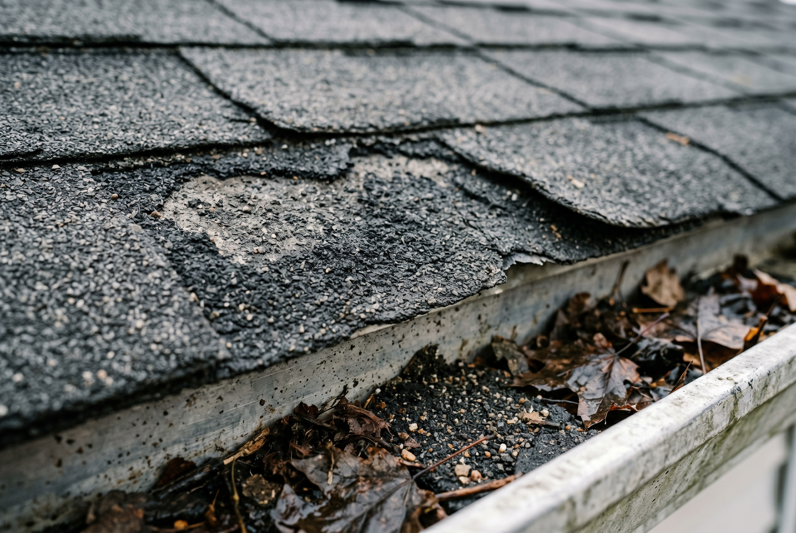
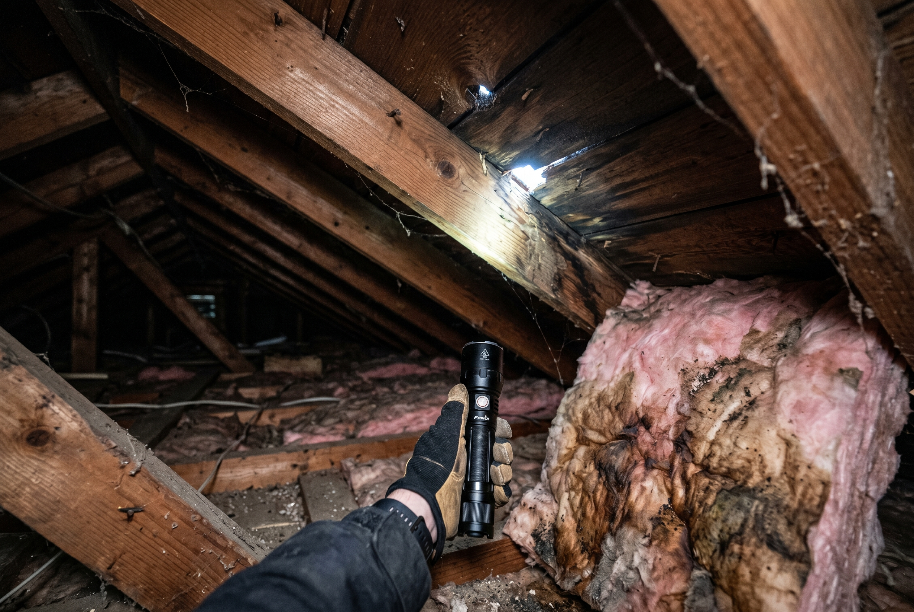

Published August 24, 2026 • By Black Ridge Contracting
Late summer is the right time to walk your roof before the weather turns. Iowa storms hit hardest in late September through November, and again in March when the freeze-thaw really kicks in. If you catch a problem in August, you have time to fix it before it becomes a real one. Wait until November and you're patching in the cold with a leak already started.
Here is the contractor's checklist we run before storm season, and what each item actually costs if you find a problem.
Walk the Roof Line From the Ground First
You don't have to get on the roof to spot most issues. Walk the perimeter of the house and look up. What you're checking for:
- Visible sag along the ridge. The ridge should be a straight line across. A dip or curve means structural movement underneath, usually a deck issue or undersized framing.
- Curl or cup on shingles. Healthy shingles lay flat. If the edges are lifting up like a potato chip, the asphalt has dried out and the roof is past its service life.
- Dark streaks along the chimney or vents. Streaks usually mean flashing is leaking and water has been getting in for a while.
- Missing shingles. Especially on the south or west-facing side, the hottest exposure. Any gap in coverage is a leak waiting for the next storm.
- Granules in the gutters. Look down into a gutter. If it looks like there's sand piled in there, that's shingle granule loss. Shingles without granules are exposed to UV and have months left, not years.

Then Check the Attic
The attic tells you what's already happened. Go up on a sunny day with a flashlight. What you're looking for:
- Daylight through the roof deck. Any pinhole of light coming through means water is too. Mark the spot and check from outside.
- Dark stains or streaks on the rafters or deck. Old water damage. May have been from a leak that already got fixed, or may be active.
- Wet or compressed insulation. Wet insulation is a leak symptom. Compressed insulation is past its useful life either way and should be replaced.
- Visible rust on nails. Roofing nails should look galvanized. Rust means moisture has been hitting them for a while.
- Mold or mildew smell. If the attic smells musty, there's been moisture sitting up there. Check ventilation and check for active leaks.

Check the Flashing
Most Iowa roof leaks are flashing leaks, not shingle leaks. Flashing is the metal at every roof penetration, chimney, vent pipe, skylight, where two roof planes meet. It seals more than half the leak-prone points on a roof. Flashing typically needs attention before the shingles do.
From the ground or a ladder, look at:
- Chimney flashing. Should be tight against the brick. Caulk gaps or visible separation is a leak.
- Skylight flashing. Same idea, should be tight all the way around.
- Pipe boots. The rubber collar around plumbing vents. They crack from UV after 7 to 12 years and need replacement.
- Step flashing where the roof meets a wall. Should be visible as a stair-step pattern, properly woven.
Flashing repair is usually a few hundred dollars per location. Catch it before water gets in and you save thousands.
The Roof Edge and Gutters
Walk under the eave. Look up at the underside. What you're checking:
- Soffit and fascia condition. Wood soffit that looks soft or has visible water staining is rotting. Replacement is $20 to $40 per linear foot.
- Gutter pitch and security. Gutters should slope toward the downspout. If they hold water, they're either clogged or sagging. Either way, fix before storm season.
- Downspout discharge. Should dump at least 4 feet away from the foundation. If yours is dumping right next to the house, get an extender. $20 fix that prevents a $5,000 basement waterproofing job.
Cost Ranges for What You're Likely to Find
Real numbers from recent Central Iowa work:
- Replace pipe boots and re-caulk vents: $200 to $500
- Repair flashing at chimney or skylight: $400 to $1,200
- Replace 10 to 20 damaged shingles: $300 to $800
- Clean and re-pitch gutters: $250 to $600
- Replace soffit and fascia, one elevation: $1,200 to $3,500
- Full roof replacement, average Iowa home: $9,000 to $15,000
If you find one issue, fixing it now usually runs a few hundred bucks. If you wait through a winter and find five issues, you're often looking at four to five figures.
When to Call a Contractor for a Walkthrough
If you're not comfortable getting in the attic or walking the perimeter critically, just call. We do free pre-storm walkthroughs across Central Iowa, no obligation. We'll give you an honest read and a written estimate on anything that needs attention.
See our roofing services or call us at (515) 219-4654 to set up a walkthrough before fall storms hit.
Frequently Asked Questions
The two best times are late August through September, before fall and winter storms, and early April after the freeze-thaw cycle is done.
Most reputable Central Iowa roofers offer free inspections. A standalone certified inspection for a home sale or insurance claim runs $200 to $400.
Granules in gutters, curl or cup on shingles, dark streaks along the chimney, exposed nail heads, missing shingles after a storm, and visible sagging along the ridge.
Asphalt shingle roofs in Iowa typically deliver 15 to 22 years of service life. Metal and architectural shingle roofs run 30 to 50 years.